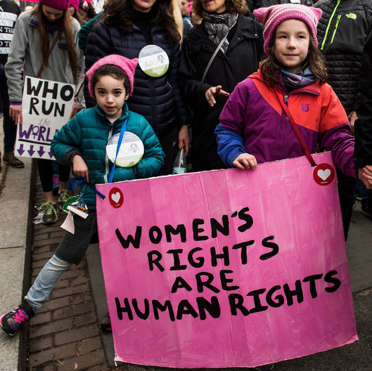

Travels with Trump
The Donald wouldn’t last a day as my travel buddy. He doesn’t seem like the kind of guy who can roll with the punches. He seems like an all-inclusive monogrammed luggage tourist, while I haven’t washed my face in three days and am obsessed with my Scrubba bag that turns the world into a laundromat. We are both stubborn, so planning would be a disaster. Also, he doesn’t drink, which is fine but would make for a piss-poor companion for me, someone starting a second blog solely dedicated to drinking (did you know I like drinking?)
But traveling right now, while he somehow holds office, and even in October before the election, it really seems like he’s right here with me. In October you could see people trying really hard not to bring it up, and then a few beers deep suddenly blurting out “THERE’S NO WAY THAT COULD HAPPEN, RIGHT!?!?!” Oh, but it could. And it did. Now, there’s not even a cursory attempt to hold back. “Oh, you’re American? Trump, amirite?” It’s understandable. America’s political situation affects the rest of the world in ways that not many governments do. It’s so goddamn ridiculous that no one even gives a shit about Brexit anymore. “Oh, you’re leaving? That’s cool; America just elected a spray-tanned Hitler-wannabe so we’re kind of focussed on that now….”

It has its pros and cons. My first night in Kuala Lumpur I sat talking with a Swiss guy and a French girl, and the conversation got so intense so quickly in part because of T-bone (is this a nickname people are using? feel very out of the loop.) In my experience I’ve ended up learning much more about other countries’ governments and political climates because they are more open about their own issues. Especially in Malaysia, everyone from Uber drivers to waiters were openly speaking their mind about their own prime minister (they hate him) as well as our president (they also hate him). It’s amazing, but it’s also exhausting. Sometimes I want to say I’m from New Zealand because fuck it, I’m too wiped out to do this right now, and nobody talks to Kiwis about their political system.
I also happen to be traveling in predominantly Muslim countries. I was on my way to Indonesia when T announced his Muslim travel ban. I sobbed like a crazy person in the hostel over breakfast out of a combination of horror that something like that could actually happen and pride in everyone who was protesting at JFK and across the country (#teamalwayscrying). I wasn’t scared for my safety, but I did expect some blowback from locals. Although Trump did not ban immigrants from any Southeast Asian nations, he basically gave a big FUCK YOU to all parts of the Muslim world that don’t give us oil.
(Yeah, that’s right, we all know it’s an economic-driven farce you overgrown string cheese.)
And then I headed to UAE, Egypt, and Lebanon, where I REALLY expected people to hate me, or not let me into their countries, or at the very least be kind of rude.
I’ve experienced none of that. I’ve had locals insult Trump or, most hearteningly, not actually know he exists (thank you, cab drivers in rural Egypt. You’ll never know how happy this made me.) The only people who have side-eyed me about being American were fellow travelers, and they warmed up pretty quickly when I told them I had worked in Reproductive Justice, an area extremely impacted by our election cycle because apparently women wanting even a small amount of paid time off after GROWING A HUMAN BEING INSIDE OF THEM FOR NINE MONTHS is a political issue, not a human rights one.
Sometimes you see it play out the same way hatred of Muslims plays out in the US. It’s really, really easy to hate the unfamiliar. It’s much harder to hate the person next to you (unless they’re snoring, in which case they are literally Satan.) This is why desegregation in the 1960s was such a positive move; you can’t really convince a kindergartener that black people aren’t people when their best friend is black. So people “hate Americans” in theory, but when I’m there talking with them, also criticizing aspects of my government while still defending the place that I love, it’s harder for them to keep that hatred alive. There has been so much isolationism in the States as a fear reaction to “the threat of Islam” that of course people who live in bunkers in rural areas are going to be scared. That's Trump's whole political move, one that's been cultivated by many politicians and terrorists before him to varying success: FEAR.

I wrote a paper in college about the psychology of extremism--what makes an active terrorist and how can you spot one before they act? Hint: it’s not related to skin color. I was always drawn to personality psych, but couldn’t find a single trait that was proven to have any sort of link to a predisposition towards terrorist acts. One factor, however, was overwhelmingly agreed upon as the big culprit. Isolationism will turn you into a terrorist faster than any ISIS camp (actually, they use that tactic because they’re smart, though horrible.) If you surround yourself solely with ideas that align with your way of thinking, you not only won’t grow intellectually, you’ll become increasingly entrenched against the unfamiliar, potentially to the point of violence. This isn’t specifically a right-wing or left-wing thing, either. We got terror on all sides, baby.

No, backpacking won't stop terrorism, but it introduces you to people and ideas that you might never have otherwise encountered. I consider myself an open and relatively well-educated person, and I’ve repeatedly been blown away by how incorrect my beliefs about places or people have been. (Cuba is a perfect example, and that post is coming, but I have 90 pages of notes to get through…) It’s a little bit self-selective; not only do you need the funds to do so but you probably aren’t going to go explore Southeast Asia or the Middle East if you’re afraid of people different than yourself. But maybe your friend talked you into going to a Full Moon Party, or you really, really wanted to see the Pyramids, or someone you know and trust went out and traveled and you just listened to their stories. One of the most inspiring things I’ve seen was a 74 year old man have his mind absolutely blown in Havana, realizing most of what he believed about their country was false, and having the time of his life hanging out with the locals and working on their cars.
Because that's a better answer than buying into fear. Manipulating people using fear is the definition of terrorism, even if it's our own president doing it to us. You don’t even have to travel; just engage with people who aren't exactly like you either where you are or online. This ties back into my first post, into my feelings after the election, into why I'm writing at all. It's so easy to hate people who voted a certain way or believe a certain thing, and it's harder to actually doubt that hate and engage with them, even when it's hard and you want to punch them in their stupid faces because they're doing something you completely believe is wrong. But realizing that it takes all types, that if everyone agreed then the world would suck, is what defeats terrorism. And right now, the #1 terrorist in our country seems to be right here with me, and I’m spending like 80% of my time dealing with that asshole when I should be drinking wine on the beach.
TRUMP TRUMP TRUMP IT UP,
TM





ver más